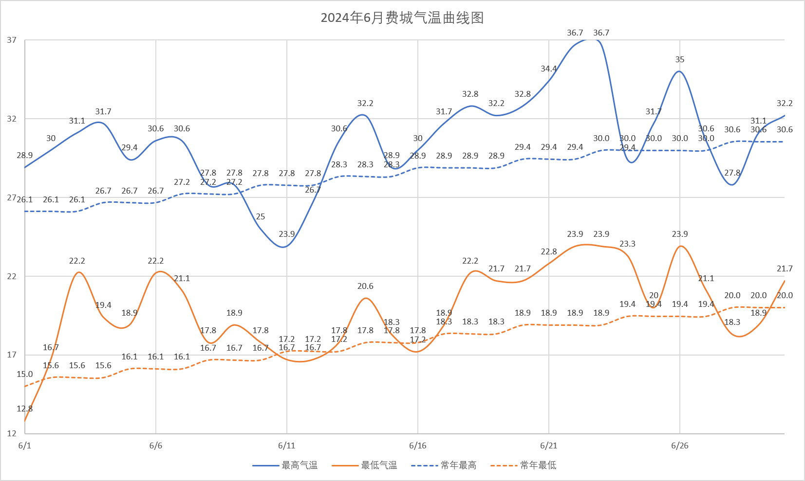
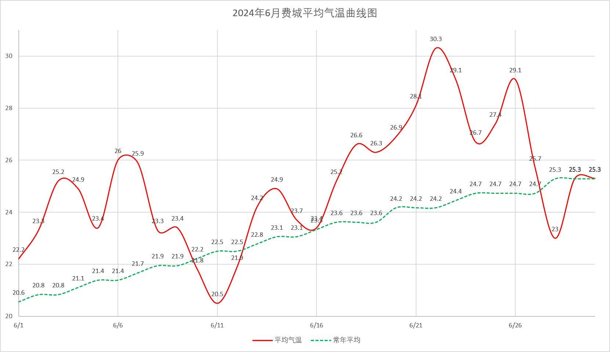
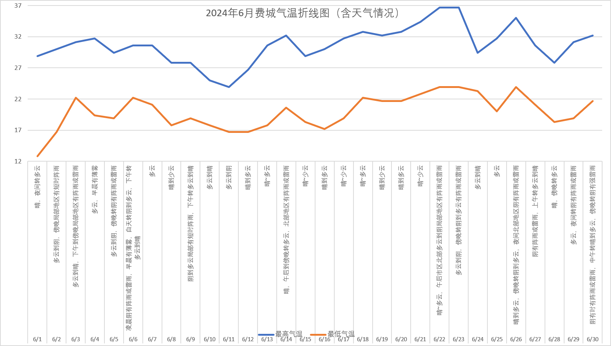
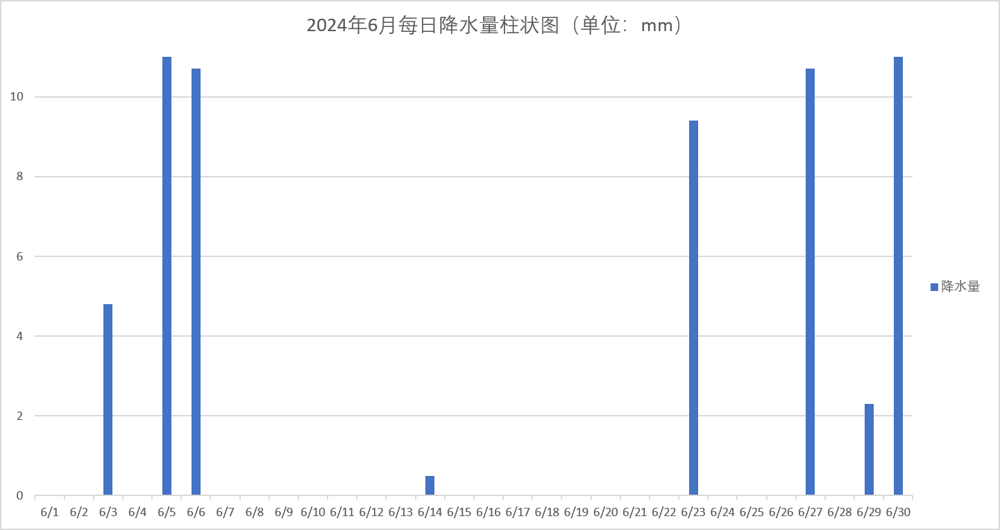
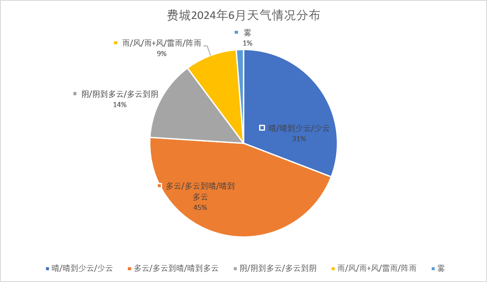

| 日期 | 天气状况 | 最高气温 (℃) | 最低气温 (℃) | 平均气温 (℃) | 常年最高 (℃) | 常年最低 (℃) | 常年平均 (℃) | 降水量 (mm) | 预报评分 |
|---|---|---|---|---|---|---|---|---|---|
| 6/1 | 晴，夜间转多云 | 28.9 | 12.8 | 22.2 | 26.1 | 15.0 | 20.6 | 0 | 90 |
| 6/2 | 多云到阴，傍晚局部地区有短时阵雨 | 30 | 16.7 | 23.3 | 26.1 | 15.6 | 20.8 | T | 63 |
| 6/3 | 多云到晴，下午到傍晚局部地区有阵雨或雷雨 | 31.1 | 22.2 | 25.2 | 26.1 | 15.6 | 20.8 | 4.8 | 65 |
| 6/4 | 多云，早晨有薄雾 | 31.7 | 19.4 | 24.9 | 26.7 | 15.6 | 21.1 | 0 | 70 |
| 6/5 | 多云到阴，傍晚转阴有阵雨或雷雨 | 29.4 | 18.9 | 23.4 | 26.7 | 16.1 | 21.4 | 38.4 | 65 |
| 6/6 | 凌晨阴有阵雨或雷雨，早晨有薄雾，白天转阴到多云，下午转多云到晴 | 30.6 | 22.2 | 26 | 26.7 | 16.1 | 21.4 | 10.7 | 95 |
| 6/7 | 多云 | 30.6 | 21.1 | 25.9 | 27.2 | 16.1 | 21.7 | 0 | N/A |
| 6/8 | 晴到少云 | 27.8 | 17.8 | 23.3 | 27.2 | 16.7 | 21.9 | 0 | N/A |
| 6/9 | 阴到多云局部有短时阵雨，下午转多云到晴 | 27.8 | 18.9 | 23.4 | 27.2 | 16.7 | 21.9 | 0 | N/A |
| 6/10 | 多云到晴 | 25 | 17.8 | 21.8 | 27.8 | 16.7 | 22.2 | 0 | 87 |
| 6/11 | 多云到阴 | 23.9 | 16.7 | 20.5 | 27.8 | 17.2 | 22.5 | 0 | 85 |
| 6/12 | 晴到多云 | 26.7 | 16.7 | 21.9 | 27.8 | 17.2 | 22.5 | 0 | 90 |
| 6/13 | 晴~多云 | 30.6 | 17.8 | 24.2 | 28.3 | 17.2 | 22.8 | 0 | 94 |
| 6/14 | 晴，午后到傍晚转多云，北部地区有阵雨或雷雨 | 32.2 | 20.6 | 24.9 | 28.3 | 17.8 | 23.1 | 0.5 | 72 |
| 6/15 | 晴~少云 | 28.9 | 18.3 | 23.7 | 28.3 | 17.8 | 23.1 | T | 98 |
| 6/16 | 晴到多云 | 30 | 17.2 | 23.4 | 28.9 | 17.8 | 23.3 | 0 | 88 |
| 6/17 | 晴~少云 | 31.7 | 18.9 | 25.2 | 28.9 | 18.3 | 23.6 | 0 | 91 |
| 6/18 | 晴~多云 | 32.8 | 22.2 | 26.6 | 28.9 | 18.3 | 23.6 | 0 | 85 |
| 6/19 | 晴到少云 | 32.2 | 21.7 | 26.3 | 28.9 | 18.3 | 23.6 | 0 | N/A |
| 6/20 | 晴到多云 | 32.8 | 21.7 | 26.9 | 29.4 | 18.9 | 24.2 | 0 | 95 |
| 6/21 | 晴~少云 | 34.4 | 22.8 | 28.1 | 29.4 | 18.9 | 24.2 | 0 | 91 |
| 6/22 | 晴~多云，午后市区北部多云到阴局部地区有阵雨或雷雨 | 36.7 | 23.9 | 30.3 | 29.4 | 18.9 | 24.2 | 0 | 96 |
| 6/23 | 多云到阴，傍晚转阴到多云有阵雨或雷雨 | 36.7 | 23.9 | 29.1 | 30.0 | 18.9 | 24.4 | 9.4 | 90 |
| 6/24 | 多云到晴 | 29.4 | 23.3 | 26.7 | 30.0 | 19.4 | 24.7 | 0 | N/A |
| 6/25 | 多云 | 31.7 | 20 | 27.4 | 30.0 | 19.4 | 24.7 | 0 | N/A |
| 6/26 | 晴到多云，傍晚转阴到多云，夜间北部地区阴有阵雨或雷雨 | 35 | 23.9 | 29.1 | 30.0 | 19.4 | 24.7 | 0 | 96 |
| 6/27 | 阴有阵雨或雷雨，上午转多云到晴 | 30.6 | 21.1 | 25.7 | 30.0 | 19.4 | 24.7 | 10.7 | 85 |
| 6/28 | 晴，傍晚转多云 | 27.8 | 18.3 | 23 | 30.6 | 20.0 | 25.3 | 0 | 95 |
| 6/29 | 多云，夜间转阴有阵雨或雷雨 | 31.1 | 18.9 | 25.3 | 30.6 | 20.0 | 25.3 | 2.3 | 95 |
| 6/30 | 阴有时有阵雨或雷雨，中午转晴到多云，傍晚转阴有强雷雨 | 32.2 | 21.7 | 25.3 | 30.6 | 20.0 | 25.3 | 42.2 | 87 |
| 平均值/总和 | \ | 30.7 | 19.9 | 25.1 | 28.5 | 17.8 | 23.1 | 119 | 86 |
| 极高最高温 | 出现日期 | 极低最低温 | 出现日期 | 极高最低温 | 出现日期 | 极低最高温 | 出现日期 | 平均高温 | 平均低温 | 平均气温 | 气温距平 |
|---|---|---|---|---|---|---|---|---|---|---|---|
| 36.7℃ | 2024/6/23 & 6/24 | 12.8℃ | 2024/6/1 | 23.9℃ | 2024/6/11 | 23.9℃ | 2024/6/22 & 6/23 & 6/26 | 30.7℃ | 19.9℃ | 25.1℃ | +2.0℃ |
| 天气情况 | 天数（天） |
|---|---|
| 晴/晴到少云/少云 | 9.250 |
| 多云/多云到晴/晴到多云 | 13.550 |
| 阴/阴到多云/多云到阴 | 4.142 |
| 雨/风/雨+风/雷雨/阵雨 | 2.683 |
| 雾 | 0.375 |




